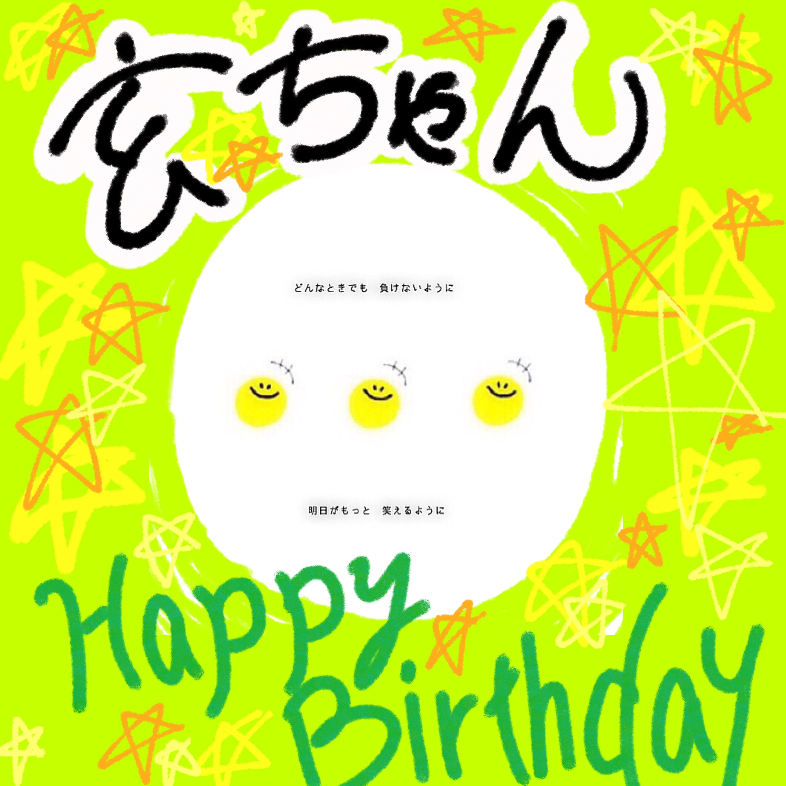

もう早いもので、また一つ歳を重ねてしまいました。
あっという間に17歳ですね……😅
先の一年間、ホントに色んな事がありました。
リアルの話では、文化祭に今までに無いくらいに死ぬ気で取り組んだり、様々なマイプロジェクト運動に参加したり。
そしてネット上では、Mastodonインスタンス「板橋丼(Itabashi-don)」を設立したり、いつも通り色んな物を作ったり、などなど……。
こんなに濃厚な毎日を過ごすのが、ホントに楽しかったです。
今までで最高の一年だったなと、自信を持って断言したく思います。
さて、17歳としての一年間を迎えるにあたって、また新しい目標を設定します。
そうでもしないとモチベとか上がらないので。ｗｗ
この一年間の目標は「 常識をぶっ壊せ。 」
どーせ途中で気が変わる気はするけど、まぁ気が変わるまではこれで。笑
今回の目標を思い立った理由はいくつかあります。
まず一つ目に、 あと1ヶ月程で受験生になってしまう ということ。
高校3年生になると、学生生活期間を含むあらゆる事が変わっていきます。
例えば3学期がなかったり、部活は引退の時期だったり……。
ホントに色んな事が挙げられるかと思います。
その中でも、私はもう一回文化祭にぶつかっていきたいと思っています。
昨年の記事で触れたとおり、今年度の文化祭で初めてライブイベントに出演させていただきました。
ですが、それは正規枠ではなく、あくまでも先生が用意してくださった 慈悲枠 での出演でした。
当初はその枠を断ろうと思っていました。
そりゃオーディションに落ちたのにもかかわらず、厚かましく出演させていただくなど、自分が望んだものではなかったので。
当時は明るく振る舞っていたつもりでした。
他の生徒と比べると、今までの音楽関連の経歴がある上に「高2＝最高学年」ということで、まず落ちることはないだろう、と踏んでいました。
それなのにたった1人、自分だけが落ちてしまった。後輩にも負けてしまった。
あそこまで恥ずかしさと悔しさで一杯になったのは、ホントに久しぶりでした。
だからこそ、今年こそ、自分の歌で舞台に立ちたい。
あの日からずっとずっと、その思いは変わっていません。
恐らく高3がエントリーするなど前代未聞の事態でしょう。
確実に先生にも止められるでしょう。
だけど、だけどそれでも、私は歌を歌いたい。
だから私は来年度も、オーディションになったとしても、本気で全身全霊の歌を届けたいと思います。
そして二つ目に、 自分一人の行動で周りを変えられる ということ。
これも過去記事で触れましたが、国境越えをこの一年間続けてきました。
文化祭で顔と名前を知られてから、正直嫌になる日もたびたびありました。
ですが、私がやり始めたことで周囲が変わり始めたことがあります。
それは 朝の待ち合わせ です。
最初は普通に親友くんと待ち合わせしていただけでした。
ですが、回数を重ねていく内に『これは面白いことができるな』と考え付き、観察を始めました。
すると2週間ほどで、今まで居なかったはずの「出待ち軍団」が現れ始めました。
これに関しては、個人的にも凄く面白い結果になったな、と感じています。
今まで 常識ではないこと が、新しく 常識予備軍 になった。
この経験を通して、きっと一人の行動でも環境は変えられる、という考えに帰結しました。
だからこそ、あと1年でどこまで変えられるのか、新しい世界を見てみたい。
そんな思いで、この新しい1年を過ごしていきたいと思います。
以上、若干冗長になりましたが、常識をぶっ壊す毎日を過ごしていきたいと思います。
例を挙げると、受験生なのに勉強だけではなく、適度に遊んでいく。
数日勉強しても、何も変わらない。
それならば、数日勉強しなくても何の支障も来たさない。
このように 論理的 な思考に基づいて、しっかり 反抗 していきたいなーと。
だからこそ、来年になっても一人涼しい顔して、毎日を有意義に過ごします。
最後になりますが、今年度もよろしくお願い致します。
浮上率は一層低くなると思いますが、どうか可愛がってください。笑笑
最後に、今年頂いたプレゼントを紹介させてください。
ほんっとに嬉しいです。ありがとうございます……！！🙏🙏
